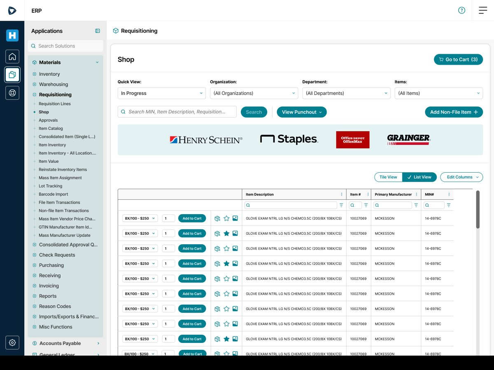
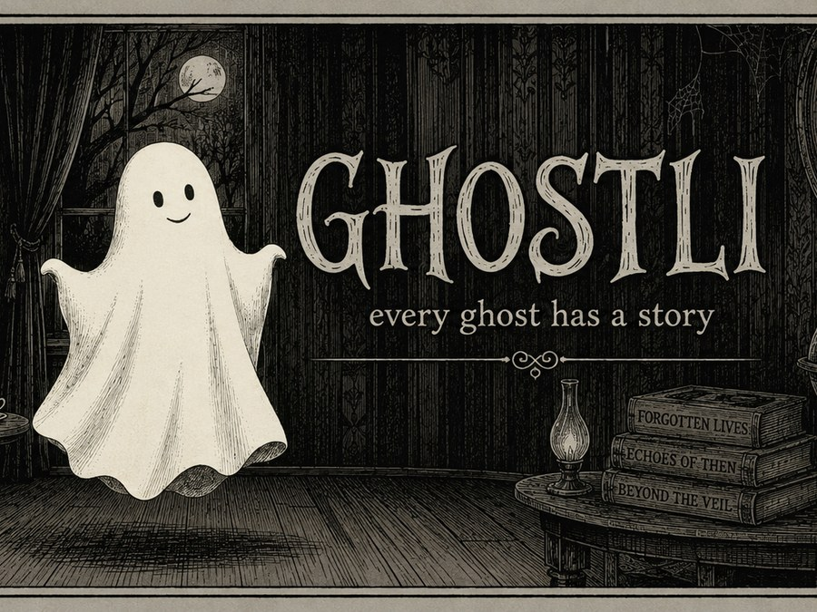
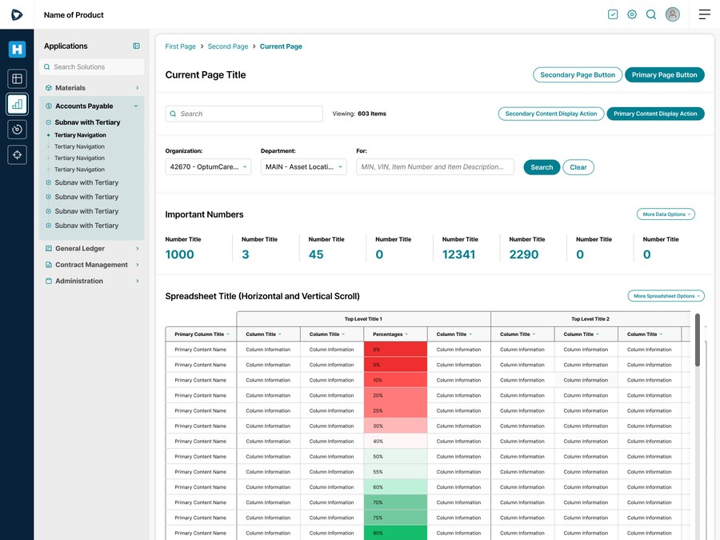
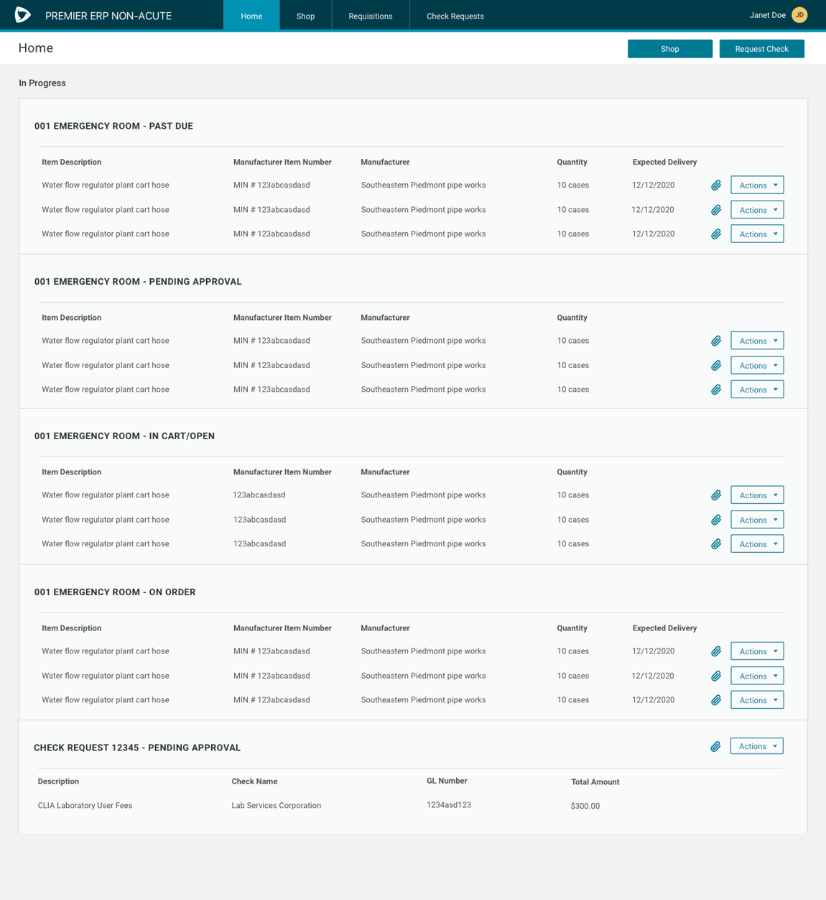
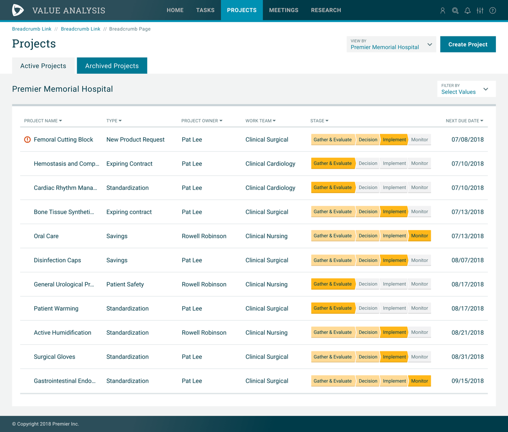

I'm a product designer focused on enterprise software — turning messy, high-stakes workflows into platforms people actually trust. I simplify complex systems by identifying the essential user experience hidden beneath organizational, technical, and operational complexity. Currently based in Asheville and Charlotte NC.
Bringing Premier's procure-to-pay ERP onto the Premier Design System, and adding pharmacy purchasing capabilities built with Optum as the pilot client.

Building an AI-native product from the ground up — a family-friendly exploration game with a procedurally generated cast of ghosts and a custom, hand-built typeface.
View case study →
Scaling design across 75+ enterprise healthcare products — contributing to a shared component library that aligned design and engineering and reduced the cost of building enterprise software.
View case study →
Making enterprise procurement feel consumer-friendly — a redesigned ordering experience for Acute Care staff, powered by an unchanged Core ERP behind the scenes.

Rebuilding trust through human-centered design — a research-driven redesign that helped a healthcare platform re-enter the market and recapture former customers.

I'm a product designer who likes the projects other people find intimidating — enterprise workflows, regulated industries, systems with a hundred edge cases and no obvious owner.
My process starts with research, not wireframes: understanding what's actually true across an organization before deciding what to standardize and what to leave flexible. I've led design end-to-end, from discovery through implementation, partnering closely with product and engineering along the way.